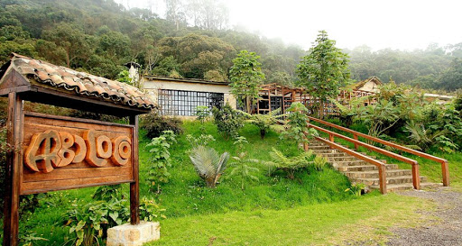

<!-- Your main view, should have "view-main" class -->
<div class="view view-main">
    <!-- Initial Page, "data-name" contains page name -->
    <div data-name="home" class="page">
    <!-- Top Navbar -->
        <div class="navbar">
            <div class="navbar-bg"></div>
            <div class="navbar-inner barra-supmafec">
                <div class="leftmafec">
                    <a href="" class="panel-open"> <i class="fas fa-bars"></i>
                    </a>
                </div>
                <div class="flechamafec">
                    <a href="/actividades/"><i class="fas fa-arrow-left"></i></a>
                </div>
                <div class="titlemafec">Excursiones</div>
                <div class="iconomafec">
                    <a href="/actividades/"><i class="fas fa-mountain"></i></a>
                </div>
            </div>
        </div>

        <!-- Bottom Toolbar -->
        <div class="toolbar toolbar-bottom">
            <div class="toolbar-inner barra-down">
                <!-- Toolbar links -->
                <a href="#" class="bo">
                    </a>
                <a href="/home/" class="home"><i class="fas fa-home icono"></i></a>
                <a href="/mapa/" class="mapa"><i class="fas fa-map-marked-alt icono"></i></a>
            </div>
        </div>

        <!-- Scrollable page content -->
        <div class="page-content">
            <div class="tourtitulo">
            <p> Las mejores excursiones que puedes vivir en Bogotá</p>
            </div>
            <div class="tourinfo">
                <p> </p>
                <div class = "my-rating"> </div>
                <div class="my-rating"></div>
                <h3>Catedral de Sal </h3>
                <p>La Catedral de Sal es un recinto construido en el interior de las minas de sal de Zipaquirá, en el departamento de Cundinamarca, Colombia. Es considerada como uno de los logros arquitectónicos y artísticos más notables de la arquitectura colombiana, por lo que se le ha otorgado incluso el título de joya arquitectónica de la modernidad. </p>
            </div>
            <div class="tourinfo">
                <p> </p>
                <h3>Villa de Leyva</h3>
                <p>Es una ciudad colombiana en el noreste de Bogotá. Es conocida por sus edificios coloniales encalados, las calles con adoquines y la gran Plaza Mayor. En la plaza está la iglesia de Nuestra Señora del Rosario del siglo XVII y la Casa del Primer Congreso de las Provincias Unidas, donde se redactaron las nuevas leyes después de la independencia de 1812</p>
            </div>
            <div class="tourinfo">
                <p> </p>
                <h3>Parque Natural Chicaque</h3>
                <p>El Parque Natural Chicaque es un espacio protegido ubicado al sur occidente de la sabana de Bogotá, en el centro del país suramericano de Colombia, que cuenta con una rica e innumerable reserva ecológica e hídrica. Ubicado entre los municipios de Soacha y San Antonio del Tequendama, esta reserva natural conformada por 7 tipos de bosques.</p>
            </div>
            <div class="tourinfo"> 
                <p> </p>
                <h3>Café Colombiano</h3>
                <p>El café de Colombia es una indicación geográfica protegida, que fue reconocida en forma oficial por la Unión Europea el 27 de septiembre de 2007.​​ Colombia es el tercer país productor de caféy el mayor productor de café suave en el mundo. En Chocontá ofrecen la experiencia de la recogida y siembra del café colombiano.</p>
            </div>
            </div>
            
            
            <!-- Link to another page -->
            <a href="index.html">About app</a>
        </div>
        </div>
    </div>